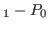

Next: About this document ...

Discretization of the Stokes equations.
Recent years have seen renewed interest in the numerical solution of the Stokes Equations. Of particular interest is the use of inf-sup stable pairs of finite elements for which weak enforcement of the incompressibility condition implies strong enforcement as well, such as with BDM elements. While there have been recent developments in preconditioning methods for the linear systems arising from this discretization, they are nonstandard preconditioning approaches. In this talk, we explore the applicability of classic Stokes preconditioning methods to the BDM discretization, including block-factorization and monolithic multigrid approaches. We compare each of these methods and present numerical results on their performance.